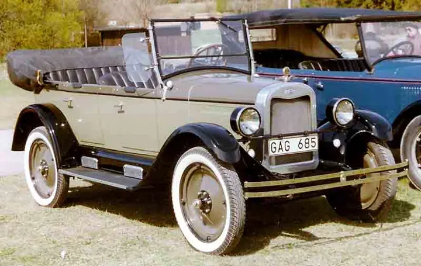
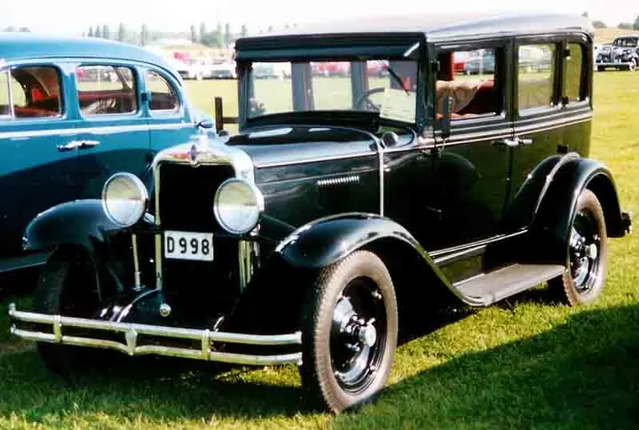
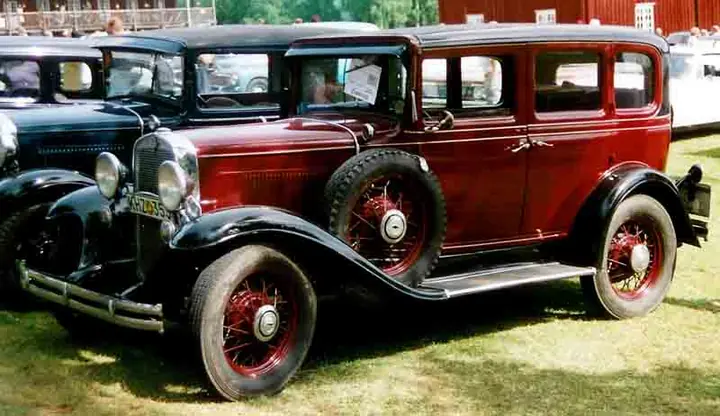
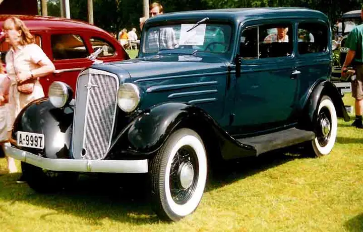
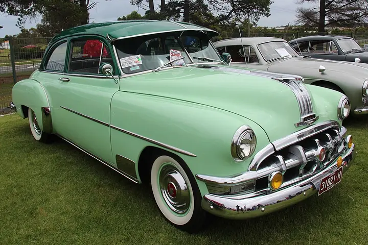
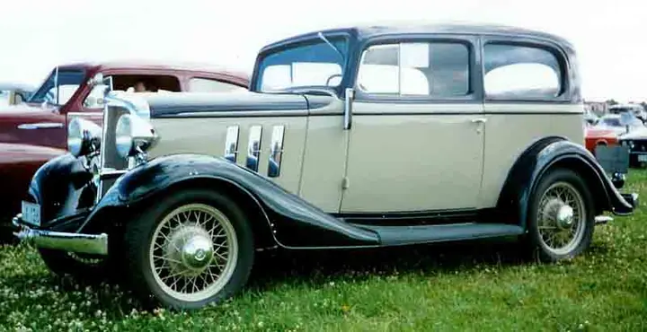

Platform
GM A
18 generations of 17 models by Chevrolet, Buick, Pontiac and Oldsmobile, 1923–1959.
The cars

Chevrolet Superior Buick Standard Six
Buick Standard Six Chevrolet Series AA Capitol
Chevrolet Series AA Capitol Chevrolet Series AB National
Chevrolet Series AB National Chevrolet Series AC International
Chevrolet Series AC International
Chevrolet Series AD Universal
Chevrolet Series AE Independence Chevrolet Series BA Confederate
Chevrolet Series BA Confederate
Chevrolet Standard Six Chevrolet Fleetmaster
Chevrolet Fleetmaster Chevrolet Stylemaster
Chevrolet Stylemaster Chevrolet Advance Design
Chevrolet Advance Design
Pontiac Chieftain · First generation (1949–1954) Chevrolet Task Force
Chevrolet Task Force Pontiac Chieftain · Second generation (1955–1957)
Pontiac Chieftain · Second generation (1955–1957)
Chevrolet Series CA Eagle / Master Oldsmobile Model 30
Oldsmobile Model 30 Pontiac 6
Pontiac 6